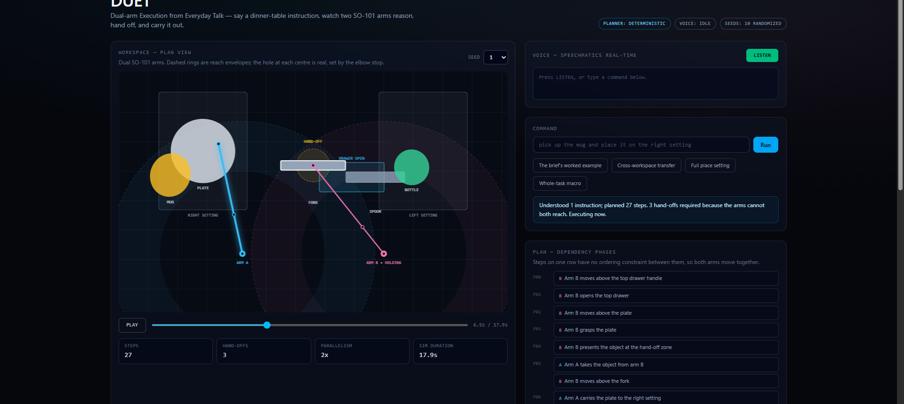
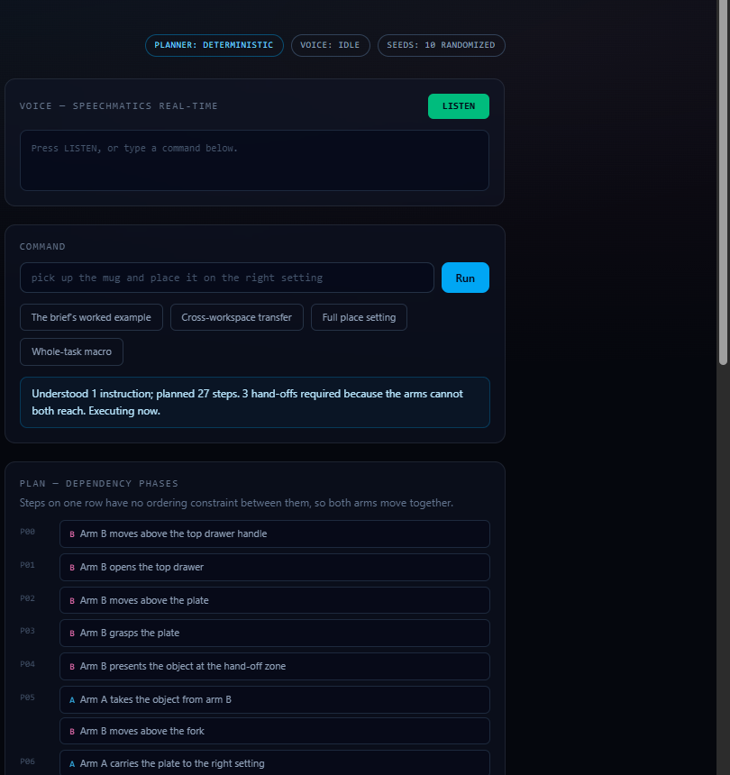
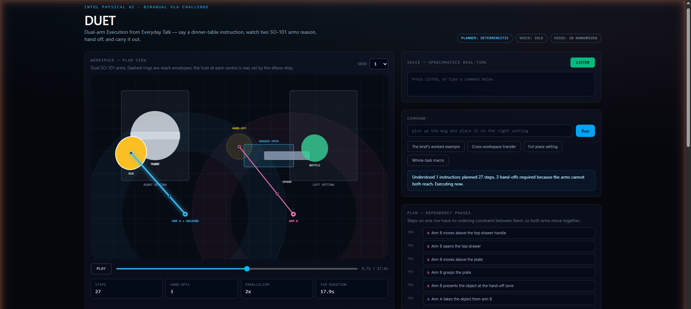

<meta charset="utf-8">
<title>DUET — AI Infra Summit Hackathon</title>
<style>
  @page { size: 1280px 720px; margin: 0; }
  * { box-sizing: border-box; margin: 0; padding: 0; }
  :root {
    --bg: #05070d;
    --ink: #e2e8f0;
    --mute: #94a3b8;
    --dim: #64748b;
    --cyan: #38bdf8;
    --mag: #f472b6;
    --line: rgba(148,163,184,0.18);
  }
  body { background: var(--bg); color: var(--ink);
         font-family: "Segoe UI", system-ui, sans-serif; -webkit-print-color-adjust: exact; print-color-adjust: exact; }
  .slide {
    width: 1280px; height: 720px; page-break-after: always; position: relative;
    padding: 64px 72px; overflow: hidden; background: var(--bg);
    display: flex; flex-direction: column;
  }
  .slide::after {
    content: ""; position: absolute; left: 0; right: 0; top: 0; height: 4px;
    background: linear-gradient(90deg, var(--cyan), var(--mag));
  }
  .num { position: absolute; right: 40px; bottom: 28px; font: 700 13px ui-monospace, Consolas, monospace; color: #334155; }
  .kicker { font: 700 15px ui-monospace, Consolas, monospace; letter-spacing: .22em; color: var(--cyan); text-transform: uppercase; }
  h1 { font-size: 104px; font-weight: 800; letter-spacing: -.03em; line-height: 1; margin: 18px 0 0; }
  h2 { font-size: 52px; font-weight: 700; letter-spacing: -.02em; margin: 14px 0 0; }
  .sub { font-size: 27px; color: var(--mute); margin-top: 18px; font-weight: 500; line-height: 1.45; }
  .lede { font-size: 24px; color: var(--mute); margin-top: 22px; line-height: 1.5; max-width: 1000px; }
  ul { margin-top: 26px; list-style: none; }
  li { font-size: 24px; color: var(--ink); margin-bottom: 17px; padding-left: 30px; position: relative; line-height: 1.4; }
  li::before { content: "▸"; position: absolute; left: 0; color: var(--cyan); }
  li small { display: block; font-size: 18px; color: var(--dim); margin-top: 5px; }
  .shot { margin-top: auto; width: 100%; border: 1px solid var(--line); border-radius: 10px; overflow: hidden; }
  .shot img { width: 100%; display: block; }
  .row { display: flex; gap: 22px; margin-top: auto; }
  .row img { width: 100%; border: 1px solid var(--line); border-radius: 10px; display: block; }
  .stats { display: flex; gap: 18px; margin-top: 30px; }
  .stat { flex: 1; border: 1px solid var(--line); border-radius: 12px; padding: 20px 22px; background: rgba(15,23,42,.5); }
  .stat b { display: block; font-size: 46px; font-weight: 800; letter-spacing: -.02em; }
  .stat span { font: 700 12px ui-monospace, Consolas, monospace; letter-spacing: .16em; color: var(--dim); text-transform: uppercase; }
  .cyan { color: var(--cyan); } .mag { color: var(--mag); }
  .flow { display: flex; align-items: center; gap: 12px; margin-top: 34px; flex-wrap: wrap; }
  .node { border: 1px solid var(--line); border-radius: 10px; padding: 16px 20px; font: 700 17px ui-monospace, Consolas, monospace;
          background: rgba(15,23,42,.6); }
  .arrow { color: var(--cyan); font-size: 22px; }
  .foot { margin-top: 26px; font-size: 19px; color: var(--dim); line-height: 1.5; }
  .mono { font-family: ui-monospace, Consolas, monospace; }
  .title-wrap { margin: auto 0; }
  .bar { width: 320px; height: 6px; margin: 30px 0; background: linear-gradient(90deg, var(--cyan), var(--mag)); border-radius: 3px; }
  .links { font: 600 20px ui-monospace, Consolas, monospace; color: var(--mute); line-height: 1.85; }
  .links b { color: var(--cyan); font-weight: 700; }
  .two { display: grid; grid-template-columns: 1fr 1fr; gap: 38px; margin-top: 26px; }
</style>

<!-- 1 -->
<section class="slide">
  <div class="title-wrap">
    <div class="kicker">AI Infra Summit Hackathon 2026</div>
    <h1>DUET</h1>
    <div class="bar"></div>
    <div class="sub">Dual-arm Execution from Everyday Talk<br>
      <span class="mono" style="font-size:22px;color:#cbd5e1">Voice → Reason → Coordinate → Execute</span></div>
    <div class="foot">Track: Bimanual VLA Manipulation with Multi-Modal Reasoning &nbsp;·&nbsp; Bonus: Best Use of Speechmatics</div>
  </div>
  <div class="num">01</div>
</section>

<!-- 2 -->
<section class="slide">
  <div class="kicker">The problem</div>
  <h2>Easy to ask for. Hard to execute.</h2>
  <div class="lede">Natural-language robot control is simple to request and difficult to carry out safely across two manipulators.</div>
  <ul>
    <li>Instructions carry hidden preconditions
      <small>The cutlery starts inside a closed drawer — it must be opened first, exactly once.</small></li>
    <li>Neither arm can reach the whole table
      <small>Each place setting sits inside exactly one arm's reach envelope.</small></li>
    <li>The world is different every run
      <small>Placement, mass, friction, shape and lighting are randomized per seed.</small></li>
  </ul>
  <div class="num">02</div>
</section>

<!-- 3 -->
<section class="slide">
  <div class="kicker">The solution</div>
  <h2>Say it. Two arms do it.</h2>
  <div class="lede">Speechmatics voice → intent → deterministic planner → coordinated bimanual execution.</div>
  <div class="shot"></div>
  <div class="num">03</div>
</section>

<!-- 4 -->
<section class="slide">
  <div class="kicker">System architecture</div>
  <h2>Every stage is inspectable</h2>
  <div class="flow">
    <div class="node">VOICE</div><div class="arrow">→</div>
    <div class="node">TRANSCRIPT</div><div class="arrow">→</div>
    <div class="node">PARSER</div><div class="arrow">→</div>
    <div class="node">PLANNER</div>
  </div>
  <div class="flow" style="margin-top:14px">
    <div class="node">SCHEDULING</div><div class="arrow">→</div>
    <div class="node">EXECUTION</div><div class="arrow">→</div>
    <div class="node">COMMAND / AUDIT LOG</div>
  </div>
  <div class="foot" style="margin-top:34px">
    The planner is deterministic and <b style="color:#e2e8f0">no language model sits in the action path</b>. A model may explain a plan; it never chooses one.
    The same sentence against the same seed produces a byte-identical plan, and the tests enforce it.<br><br>
    Reachability is decided by solving inverse kinematics — scene generator, planner and executor all call the same solver, so they cannot disagree.
  </div>
  <div class="num">04</div>
</section>

<!-- 5 -->
<section class="slide">
  <div class="kicker">Bimanual task planning</div>
  <h2>“Set the dinner table.” → 27 steps</h2>
  <div class="lede">One sentence expands into a dependency graph, not a list. Where an arm waits, the graph shows why.</div>
  <div class="row"></div>
  <div class="num">05</div>
</section>

<!-- 6 -->
<section class="slide">
  <div class="kicker">Speechmatics integration</div>
  <h2>One sentence = one command</h2>
  <div class="lede"><span class="mono">AddTranscript</span> is a <i>segment</i>, not a sentence. “Set the dinner table.” arrives as four of them.</div>
  <div class="flow" style="margin-top:26px">
    <div class="node">"Set"</div><div class="node">"the"</div><div class="node">"dinner"</div><div class="node">"table."</div>
    <div class="arrow">→</div><div class="node" style="border-color:var(--cyan);color:var(--cyan)">EndOfUtterance</div>
    <div class="arrow">→</div><div class="node" style="border-color:var(--mag);color:var(--mag)">1 COMMAND</div>
  </div>
  <ul style="margin-top:30px">
    <li>Partial transcripts drive the live caption only — a half-heard phrase never moves an arm</li>
    <li>Verified live: 6 of 6 utterances, each producing exactly one command</li>
    <li>API key never reaches the browser; short-lived token, rate-limited to protect free-tier credits</li>
  </ul>
  <div class="num">06</div>
</section>

<!-- 7 -->
<section class="slide">
  <div class="kicker">Hand-offs and parallelism</div>
  <h2>Forced by geometry, not scripted</h2>
  <div class="stats">
    <div class="stat"><span>Planned steps</span><b>27</b></div>
    <div class="stat"><span>Hand-offs</span><b class="mag">3</b></div>
    <div class="stat"><span>Parallelism</span><b class="cyan">2×</b></div>
    <div class="stat"><span>Result</span><b style="font-size:34px;color:#34d399">EXECUTED</b></div>
  </div>
  <div class="shot" style="margin-top:28px"></div>
  <div class="num">07</div>
</section>

<!-- 8 -->
<section class="slide">
  <div class="kicker">Robustness</div>
  <h2>Measured, not asserted</h2>
  <div class="stats">
    <div class="stat"><span>Seeded runs</span><b>39<span style="font-size:26px;color:#64748b">/40</span></b></div>
    <div class="stat"><span>Success rate</span><b class="cyan">98%</b></div>
    <div class="stat"><span>Automated tests</span><b>53<span style="font-size:26px;color:#64748b">/53</span></b></div>
  </div>
  <ul style="margin-top:30px">
    <li>Scoring is strict — the command must plan with no errors, <b>and</b> every step must execute, <b>and</b> the world must end in the requested state</li>
    <li>The one failing seed is kept deliberately; tuning it away would make the number meaningless</li>
    <li>98% describes 40 seeded runs in DUET's deterministic simulator — not real-world robot accuracy</li>
  </ul>
  <div class="num">08</div>
</section>

<!-- 9 -->
<section class="slide">
  <div class="kicker">Technical scope</div>
  <h2>What DUET is, and is not</h2>
  <div class="two">
    <div>
      <div class="kicker" style="color:var(--mag)">Deliberate scope</div>
      <ul style="margin-top:18px">
        <li>Purpose-built deterministic simulator<small>Runs in any browser, zero install</small></li>
        <li>Symbolic task planning<small>Reproducible and inspectable</small></li>
        <li>No physical robot claimed</li>
        <li>No Core Ultra / OpenVINO claimed</li>
      </ul>
    </div>
    <div>
      <div class="kicker">Focus instead</div>
      <ul style="margin-top:18px">
        <li>Multimodal reasoning</li>
        <li>Real-time voice interaction</li>
        <li>Bimanual planning and hand-offs</li>
        <li>Robustness and reproducibility</li>
      </ul>
    </div>
  </div>
  <div class="foot">OpenVINO / Core Ultra optimization was outside the available remote hardware environment. DUET therefore focuses on multimodal reasoning, real-time voice interaction, bimanual planning, robustness and reproducibility — and reports only what it measured.</div>
  <div class="num">09</div>
</section>

<!-- 10 -->
<section class="slide">
  <div class="kicker">Why DUET</div>
  <h2>Voice-first robotics you can verify</h2>
  <ul style="margin-top:22px">
    <li><b>Voice-first</b> — one spoken sentence produces exactly one command</li>
    <li><b>Explainable plans</b> — a dependency graph, not a black box</li>
    <li><b>Coordinated hand-offs</b> — forced by reach geometry, never scripted</li>
    <li><b>Deterministic execution</b> — same seed, same plan, byte for byte</li>
    <li><b>Reproducible evaluation</b> — 39/40 seeded runs, 53/53 tests, committed evidence</li>
  </ul>
  <div class="links" style="margin-top:34px">
    <b>Live</b> &nbsp; duet-alpha-ebon.vercel.app<br>
    <b>Code</b> &nbsp; github.com/kmt9967/duet<br>
    <b>Demo</b> &nbsp; youtu.be/zi3mNkrSNaw
  </div>
  <div class="num">10</div>
</section>
